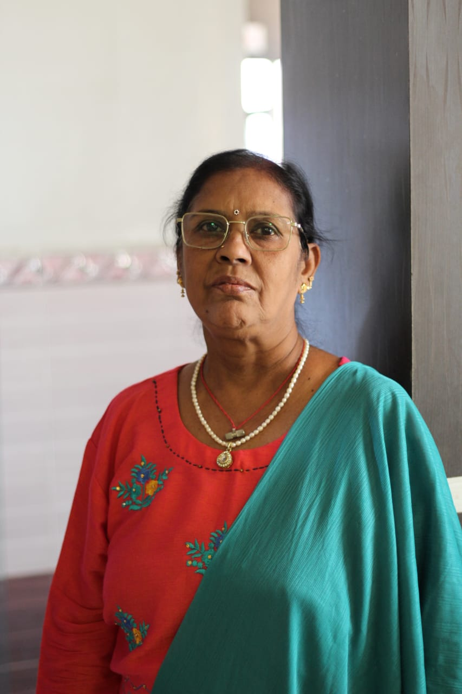
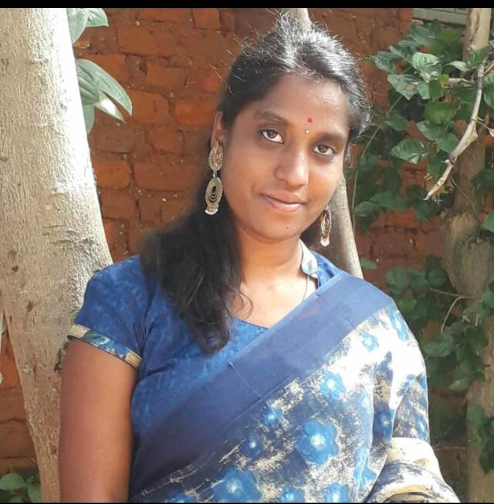
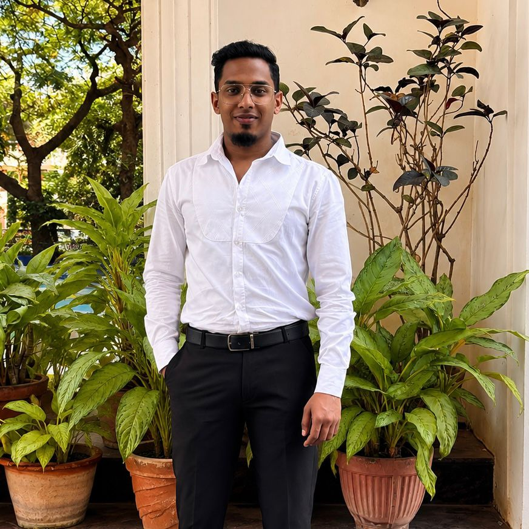

President / Chairperson
Mrs. Rukmini K M
“Service is not an obligation—it’s a privilege.”
A.R.N Growth Charitable Trust is a people-centered organisation bringing care, opportunity, and practical support closer to communities.
We work toward a future where education, health, and a safe environment are within reach for everyone—not dependent on circumstance.

The people entrusted with keeping our purpose clear and our work accountable.

President / Chairperson
“Service is not an obligation—it’s a privilege.”

Secretary
“Every child deserves a classroom, not a compromise.”

Treasurer
“Health is the foundation upon which dreams are built.”